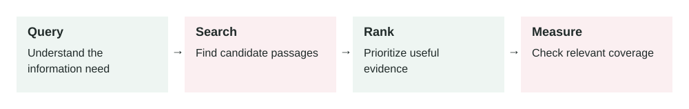

Retrieval Quality
In this lesson
- 1. What It Means
- 2. Why It Matters In Production Systems
- 3. How It Works Step By Step
- 4. How To Apply It In A Project
- 5. Real-World Example 1: Customer Support Policy Assistant
- 6. Real-World Example 2: Developer Documentation Assistant
- 7. Common Mistakes, Risks, And Trade-Offs
- 8. Practical Best Practices
- 9. Small Practice Exercise
2026-07-05 · Archived lesson · Original lesson text; technical claims not rechecked

Figure 10. Original study diagram added on 7 October 2026 to summarize this archived lesson. Each stage follows the previous stage; review may send the task back for correction.
1. What It Means
Retrieval quality means how well your AI system finds the right information before generating an answer.
This matters most in RAG systems.
RAG means Retrieval-Augmented Generation. The AI first retrieves documents, then uses them to answer.
But RAG only works well if retrieval is good.
Simple meaning:
Retrieval quality decides whether the model gets the right evidence before it answers.
If retrieval brings the wrong documents, even a strong model may give a bad answer.
Important parts:
- Query: what the user asks
- Documents: the knowledge source, such as policies, help docs, contracts, tickets, code, or database records
- Chunks: smaller pieces of documents used for search
- Embedding: a numeric representation of text used for semantic search
- Ranking: ordering search results by relevance
- Reranking: a second pass that improves result order
- Metadata: extra fields like date, category, customer, version, region, or access level
Retrieval quality is not only “did we find something?”
The real question is:
Did we find the most useful, correct, current, and allowed information?
2. Why It Matters In Production Systems
Many teams blame the model when the real problem is retrieval.
Example:
User asks:
“Can I return a damaged item after opening the box?”
The model answers:
“Opened items cannot be returned.”
That may be wrong if the damaged-item policy allows returns.
The issue may not be the model. The retrieval system may have found the normal return policy but missed the damaged-item policy.
Poor retrieval causes:
- Wrong answers
- Missing citations
- Hallucinations
- Outdated policy usage
- Private data leaks
- Bad customer support
- Weak legal or compliance answers
- Higher cost because too much irrelevant context is sent
Good retrieval improves:
- Accuracy
- Trust
- Explainability
- Lower hallucination risk
- Lower token cost
- Better user experience
RAG evaluation frameworks like RAGAS discuss retrieval-focused checks such as context relevance and answer grounding. Source: https://arxiv.org/abs/2309.15217
3. How It Works Step By Step
Imagine a user asks:
“What is the refund policy for damaged electronics?”
A retrieval system usually works like this:
Receive the user query
What is the refund policy for damaged electronics?Convert the query into a search form
The system may use embeddings, keywords, or both.
Search the index
The index contains chunks from company documents.
Example chunks:
- General refund policy
- Electronics warranty policy
- Damaged item policy
- International return rules
Retrieve top results
Example:
[ { "doc": "damaged_items_policy", "score": 0.91 }, { "doc": "electronics_warranty_policy", "score": 0.86 }, { "doc": "general_refund_policy", "score": 0.79 } ]Filter by metadata
Example:
- Region: Pakistan
- Product type: electronics
- Policy version: current
- Access: public support policy
Rerank results
A reranker may decide the damaged-item policy is more relevant than the general refund policy.
Send selected chunks to the model
The model receives only the most useful evidence.
Generate answer with citations
The model answers based on retrieved content.
Log retrieval details
The system records:
- Query
- Retrieved docs
- Scores
- Final selected chunks
- Whether the answer used them
4. How To Apply It In A Project
Start by treating retrieval as its own product feature.
Do not only test the final answer.
Test whether the system found the right evidence.
A practical setup:
Create a small test set
Example:
{ "question": "Can customers return damaged electronics?", "must_retrieve": ["damaged_items_policy", "electronics_return_policy"] }Check top-k results
Top-k means the first
ksearch results.Example:
Top 5 retrieved documents should include damaged_items_policy.Improve document chunking
Bad chunk:
Huge 12-page policy document as one chunk.Better chunks:
- Refund eligibility
- Damaged items
- Electronics exceptions
- Refund timelines
- Required evidence
Add metadata
Useful metadata:
- Document type
- Policy version
- Date
- Region
- Product category
- Access level
- Department
- Customer segment
Use hybrid search when needed
Hybrid search combines semantic search and keyword search.
Semantic search understands meaning.
Keyword search is good for exact terms like:
- Product codes
- Error codes
- Contract IDs
- Legal clause numbers
- API names
Add reranking
Reranking is useful when initial search returns mostly correct but poorly ordered results.
Measure retrieval quality
Useful metrics:
- Did the right document appear in top 3?
- Did the answer use the right document?
- How often did retrieval return nothing?
- How often did it return outdated documents?
- How often did users downvote answers because evidence was wrong?
5. Real-World Example 1: Customer Support Policy Assistant
Use case: An ecommerce support chatbot answers refund questions.
User input:
“My laptop arrived with a cracked screen. Can I return it after opening the package?”
Bad retrieval result:
[
"general_return_policy",
"opened_items_policy",
"refund_processing_time"
]
Bad answer:
“Opened electronics are not eligible for return.”
This answer ignores damage.
Good retrieval result:
[
"damaged_item_return_policy",
"electronics_damage_exception",
"refund_evidence_requirements"
]
Good answer:
“Yes, damaged electronics can be returned after opening if the damage is reported within the allowed period. You may need to provide photos of the cracked screen and packaging.”
Outcome:
The answer is correct because retrieval found the exception policy.
Production lesson:
Policy exceptions are often more important than general rules.
Your retrieval system must find them.
6. Real-World Example 2: Developer Documentation Assistant
Use case: A developer asks an internal AI assistant about deployment.
User input:
“How do I deploy the frontend service?”
Bad retrieval result:
[
"old_deployment_notes_2023",
"backend_deploy_script",
"local_setup_readme"
]
Bad answer:
“Run the old deploy command from 2023.”
This may break production.
Good retrieval result:
[
"frontend_deployment_runbook_current",
"ci_cd_pipeline_docs",
"rollback_instructions"
]
Good answer:
“Use the current CI/CD frontend deployment workflow. The frontend deployment is handled by the pipeline, and rollback instructions are in the current runbook.”
Outcome:
The assistant gives safe operational guidance.
Production lesson:
For engineering docs, retrieval must prefer current docs over stale notes.
Metadata like current: true, last_updated, and service: frontend matters.
7. Common Mistakes, Risks, And Trade-Offs
Mistake 1: Bad chunking
If chunks are too large, the model gets noise.
If chunks are too small, key context is missing.
Example:
A chunk that says:
Refund is allowed only if...
but the condition is in the next chunk is not useful.
Mistake 2: Only using vector similarity
Vector search is good, but not always enough.
Exact terms matter for:
- Error codes
- Product IDs
- Legal sections
- API names
- Invoice numbers
Use hybrid search when exact matching matters.
Mistake 3: Ignoring metadata
If old and new policies are both indexed, the system may retrieve outdated content.
Use metadata filters.
Mistake 4: Returning too many chunks
More context is not always better.
Too many chunks can confuse the model and increase cost.
Mistake 5: No access control
Retrieval must respect permissions.
A user should not retrieve private HR or customer data just because it matches the query.
Mistake 6: Measuring only final answers
If the final answer is wrong, you need to know whether the problem was:
- Retrieval
- Prompt
- Model reasoning
- Tool failure
- Outdated source data
Test retrieval separately.
Trade-off: Recall vs precision
Recall means finding all useful documents.
Precision means avoiding irrelevant documents.
High recall can bring too much noise.
High precision can miss important exceptions.
Good production systems balance both.
8. Practical Best Practices
Build a retrieval test set
For each question, define which documents should be retrieved.
Track top-k accuracy
Check whether the correct document appears in top 3, top 5, or top 10.
Use metadata filters
Filter by:
- User access
- Region
- Product
- Version
- Date
- Department
Use hybrid search for exact terms
Especially for technical, legal, financial, and product support systems.
Add reranking for important workflows
Reranking improves ordering when many results are similar.
Log retrieval results
Store:
- Query
- Retrieved chunks
- Scores
- Metadata filters
- Final chunks sent to model
Watch for stale documents
Add expiry rules or document versioning.
Prefer trusted sources
Public pages, user uploads, internal notes, and official policies should not all have the same trust level.
Connect bad answers back to retrieval
When users downvote answers, inspect whether the right evidence was retrieved.
9. Small Practice Exercise
Imagine you are building an AI assistant for company HR policies.
User asks:
“Can I work remotely from another country for two months?”
Design the retrieval plan.
Answer these:
- What documents should be retrieved?
- What metadata filters matter?
- What old or unsafe documents should be excluded?
- Would keyword search, vector search, or hybrid search be best?
- What should the assistant do if it finds conflicting policies?
A strong answer should include:
- Remote work policy
- International work policy
- Tax or legal compliance policy
- Employee region and contract type
- Current policy version only
- Hybrid search because exact terms like country, visa, tax, and remote work matter
- If policies conflict, do not guess; say the policies conflict and escalate to HR